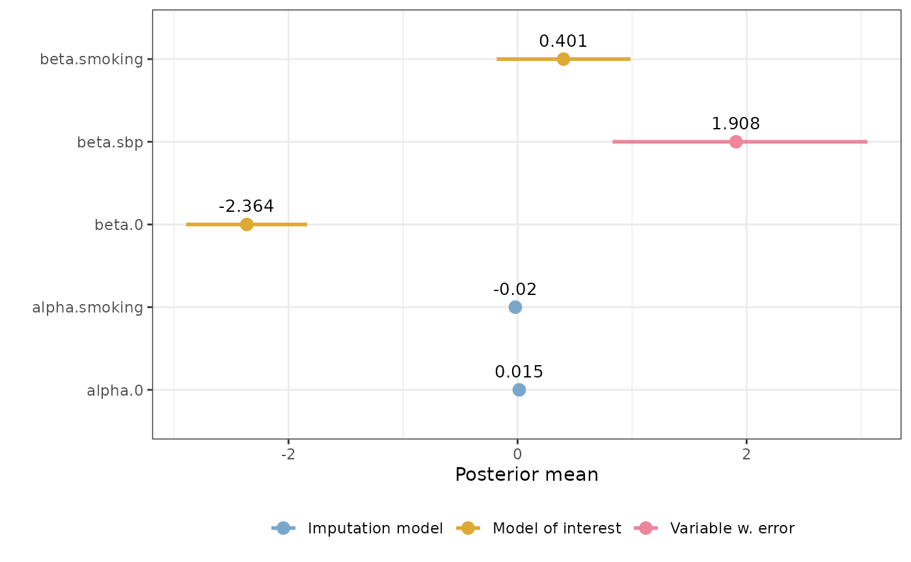

Influence of systolic blood pressure on coronary heart disease
Framingham_heart_study.Rmd| Error types | Likelihood | Response | Covariate with error | Other covariate(s) |
|---|---|---|---|---|
| Classical | Binomial | disease |
sbp1, sbp2
|
smoking |
prior.beta <- c(0, 0.01)
prior.alpha0 <- c(0, 1)
prior.alphaz <- c(0, 1)
framingham_model <- fit_inlami(formula_moi = disease ~ sbp + smoking,
formula_imp = sbp ~ smoking,
family_moi = "binomial",
data = framingham,
error_type = "classical",
repeated_observations = TRUE,
prior.prec.classical = c(100, 1),
prior.prec.imp = c(10, 1),
initial.prec.classical = 100,
initial.prec.imp = 10)
#> The legacy packages maptools, rgdal, and rgeos, underpinning the sp package,
#> which was just loaded, will retire in October 2023.
#> Please refer to R-spatial evolution reports for details, especially
#> https://r-spatial.org/r/2023/05/15/evolution4.html.
#> It may be desirable to make the sf package available;
#> package maintainers should consider adding sf to Suggests:.
#> The sp package is now running under evolution status 2
#> (status 2 uses the sf package in place of rgdal)\[ \]{} = {0}{} + {sbp}{} + {smoking}{} + {} + {0}{} + {smoking}{}\[ \]
summary(framingham_model)
#> Formula for model of interest:
#> disease ~ sbp + smoking
#>
#> Formula for imputation model:
#> sbp ~ smoking
#>
#> Error types:
#> [1] "classical"
#>
#> Fixed effects for model of interest:
#> mean sd 0.025quant 0.5quant 0.975quant mode
#> beta.0 -2.3641397 0.2691086 -2.893385 -2.3635863 -1.8380118 -2.3635745
#> beta.smoking 0.4013925 0.2979739 -0.182524 0.4012492 0.9861185 0.4012467
#> kld
#> beta.0 1.112424e-09
#> beta.smoking 8.725968e-11
#>
#> Coefficient for error prone variable:
#> mean sd 0.025quant 0.5quant 0.975quant mode
#> beta.sbp 1.907873 0.5654566 0.829275 1.896432 3.054844 1.846415
#>
#> Fixed effects for imputation model:
#> mean sd 0.025quant 0.5quant 0.975quant
#> alpha.0 0.01454484 0.01858754 -0.02191495 0.01454484 0.05100463
#> alpha.smoking -0.01958671 0.02156987 -0.06189638 -0.01958671 0.02272296
#> mode kld
#> alpha.0 0.01454484 7.041413e-11
#> alpha.smoking -0.01958671 7.041394e-11
#>
#> Model hyperparameters (apart from beta.sbp):
#> mean sd 0.025quant
#> Precision for the Gaussian observations[2] 75.90915 3.687675 68.87394
#> Precision for the Gaussian observations[3] 19.90198 1.235259 17.57413
#> 0.5quant 0.975quant mode
#> Precision for the Gaussian observations[2] 75.83154 83.38982 75.70197
#> Precision for the Gaussian observations[3] 19.86616 22.43577 19.79985
plot(framingham_model)